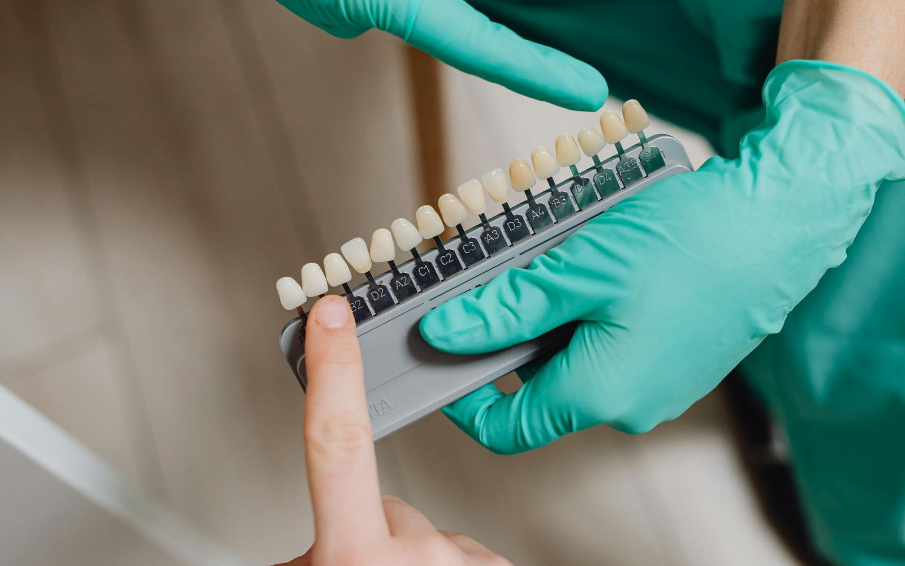
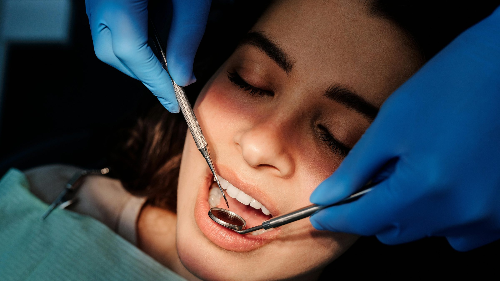

Προληπτική Οδοντιατρική
Καθαρισμοί, έλεγχοι, οδηγίες υγιεινής. Η πιο σημαντική θεραπεία είναι αυτή που δεν θα χρειαστείτε ποτέ.
01 Αρχική
Οδοντιατρική φροντίδα με γνώση, ευαισθησία και διακριτική προσοχή στη λεπτομέρεια, στην καρδιά του Περιστερίου, εδώ και πάνω από μία δεκαετία.
02 Καλώς ορίσατε
Το οδοντιατρείο της Δρ. Μαρίας Τσιστράκη δημιουργήθηκε με μια απλή ιδέα: η επίσκεψη στον οδοντίατρο δεν χρειάζεται να είναι αγχωτική.
Μπορεί να είναι μια ήρεμη, καθαρή και ξεκάθαρη εμπειρία, όπου κάθε ερώτηση απαντιέται, κάθε θεραπεία εξηγείται και κάθε ασθενής αντιμετωπίζεται ως άνθρωπος, όχι ως περιστατικό.
Από τον πρώτο προληπτικό έλεγχο μέχρι τη σύνθετη αποκατάσταση, η φροντίδα παρέχεται με σύγχρονο εξοπλισμό, διεθνώς αναγνωρισμένα πρωτόκολλα υγιεινής και τη συνέπεια μιας μικρής, προσωπικής σχέσης που χτίζεται με τον χρόνο.
03 Υπηρεσίες
Πρόληψη, αισθητική, αποκαταστάσεις και παιδοδοντιατρική με καθαρή εξήγηση πριν από κάθε βήμα.
Καθαρισμοί, έλεγχοι, οδηγίες υγιεινής. Η πιο σημαντική θεραπεία είναι αυτή που δεν θα χρειαστείτε ποτέ.

Λεύκανση, αισθητικές αποκαταστάσεις, σφραγίσματα ρητίνης. Ένα διακριτικά πιο φωτεινό χαμόγελο.

Από τη μεμονωμένη στεφάνη έως την πλήρη αποκατάσταση με σύγχρονα οδοντικά εμφυτεύματα.
04 Φιλοσοφία
Πιστεύουμε ότι ο ασθενής έχει το δικαίωμα να γνωρίζει τι του συμβαίνει, ποιες είναι οι επιλογές του και γιατί προτείνουμε τη μία θεραπεία αντί της άλλης.
Γι' αυτό αφιερώνουμε χρόνο στην εξήγηση, χρησιμοποιούμε απλά λόγια και ενθαρρύνουμε τις ερωτήσεις.
Στα παιδιά μιλάμε με τη γλώσσα τους, συχνά μέσα από μια μικρή ιστορία ή ένα παραμύθι, ώστε η επίσκεψη να γίνει παιχνίδι αντί για δοκιμασία.


Παιδιά
Με χρόνο, χαμόγελο και εξηγήσεις στη γλώσσα του παιδιού, η καρέκλα του οδοντιάτρου γίνεται ένας χώρος εμπιστοσύνης.
«Η καλύτερη οδοντίατρος που θα μπορούσαμε να επιλέξουμε για τον πρώτο έλεγχο των παιδιών μας. Υπέροχος χώρος, ζεστό περιβάλλον, χαμόγελα και καλοσύνη.»
Αξιολόγηση ασθενούς
«Εξαιρετική επαγγελματίας και πάνω απ' όλα ένας υπέροχος άνθρωπος. Το να επισκέπτεσαι τον οδοντίατρο με χαρά είναι μεγάλη υπόθεση και αυτό είναι το κατόρθωμα της Μαρίας.»
Αξιολόγηση ασθενούς
«Άψογη, καθαρή, φιλική. Δεν έχω λόγια.»
Αξιολόγηση ασθενούς
06 Επικοινωνία